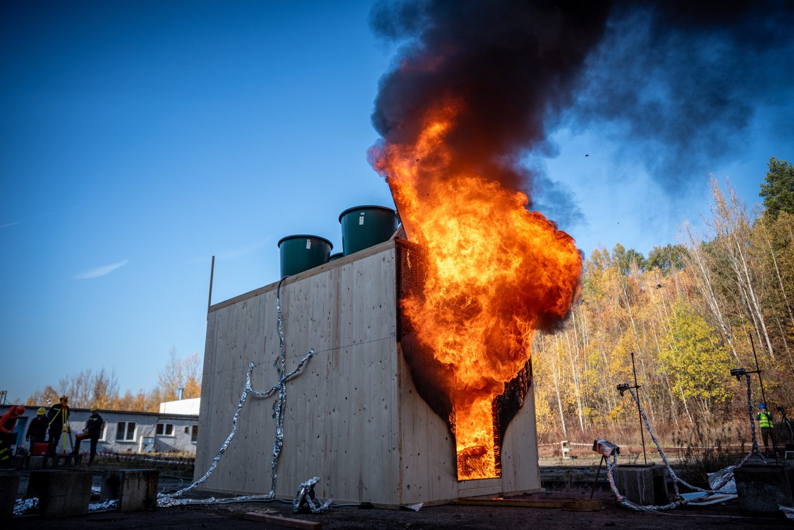
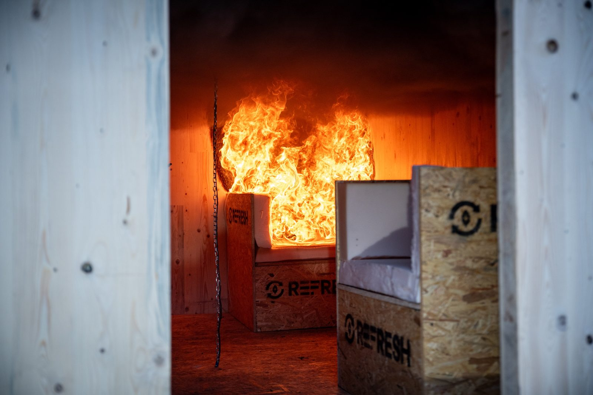

CLT REFRESH
Děkujeme!
Ve čtvrtek 5. 11. 2026 v 11:35 jsme zapálili modul z CLT panelů. Flashover přišel už po minutě a půl. Požár jsme nechali rozvinout a na konci ho uhasili.
Za čtyři dny v terénu jsme modul postavili, natřeli, navrtali, osadili desítkami čidel a změřili, co se dalo. To by bez vás nešlo. Děkujeme celému týmu a studentům Fakulty bezpečnostního inženýrství VŠB-TUO za práci, čas a nasazení.
Data teď zpracováváme a výsledky vám rádi ukážeme.




Tipovačka
13 tipů týmu, vítěz kategorie je zvýrazněnýJak požár skončí
Skutečnost: hasilo se. Správně tipovalo 7 z 13.
- Ing. Jan Holeček
- Bc. Marek Hladík
- Miroslav Pavlišta
- Ing. Michal Dostál, Ph.D.
- Štěpán Rychlý
- Ing. Štěpánka Czyžová
- Bc. Adam Rypák
Max. teplota pod stropem
Správnou odpověď zatím zná jen pan profesor Dudáček. Výsledek doplníme, až ji prozradí.
Flashover
Skutečnost: 1,5 min po zapálení. Řazeno podle odchylky.
- 1.Tomáš Janda2 min0,5 min
- 2.Ing. Eva Šopíková, Ph.D.3 min1,5 min
- 3.Ing. Jan Holeček3,1 min1,6 min
- 4.Ing. Michal Dostál, Ph.D.3,3 min1,8 min
- 5.Štěpán Rychlý4 min2,5 min
- 6.Ing. Dana Chudová, Ph.D.4,2 min2,7 min
- 6.Bc. Kryštof Jarošek4,2 min2,7 min
- 8.prof. Dr. Ing. Aleš Dudáček4,5 min3 min
- 9.Bc. Marek Hladík5 min3,5 min
- 9.Miroslav Pavlišta5 min3,5 min
- 9.Ing. Štěpánka Czyžová5 min3,5 min
Netipovali: Ing. Pavla Semianová, Bc. Adam Rypák
Čas zapálení
Skutečnost: 11:35. Řazeno podle odchylky.
- 1.Ing. Pavla Semianová11:332 min
- 2.Bc. Adam Rypák11:314 min
- 3.Ing. Eva Šopíková, Ph.D.11:305 min
- 3.Ing. Dana Chudová, Ph.D.11:305 min
- 5.Bc. Kryštof Jarošek11:416 min
- 6.Ing. Jan Holeček11:2510 min
- 6.prof. Dr. Ing. Aleš Dudáček11:2510 min
- 8.Štěpán Rychlý11:2015 min
- 9.Ing. Štěpánka Czyžová11:1520 min
- 10.Miroslav Pavlišta12:0429 min
- 11.Ing. Michal Dostál, Ph.D.12:1237 min
- 12.Bc. Marek Hladík12:3055 min
- 13.Tomáš Janda12:3762 min
CLT REFRESH · FBI VŠB-TUO · listopad 2026